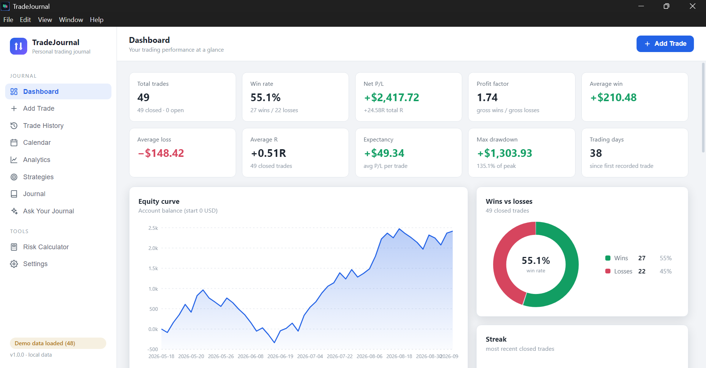

Record
Keep the details of your trades in one organized place.
TradeJournal helps you record your trades, organize your strategies, review your history, analyze performance, and learn from your own trading decisions.

A good journal gives you a place to capture what happened, why you acted, and what you can learn afterward.
Keep the details of your trades in one organized place.
Return to previous trades and inspect the decisions behind them.
Use your history, journal, and analytics to spot patterns over time.
Explore the main areas of the TradeJournal V1 desktop app.
Real screenshots from the V1 desktop application.
Step-by-step guides and screenshots are here to help you get the most from TradeJournal. Choose a section to get started.
TradeJournal is free and growing. Follow the project, share feedback, and help us improve the journal for the people who use it.
Have a feature request, improvement, or suggestion? Tell us what would make TradeJournal more useful.
Send FeedbackKeep an eye on the project for website improvements, new releases, and future TradeJournal updates.
View on GitHubTradeJournal's core desktop journal is available free of charge. Our goal is to keep building something genuinely useful.
Get TradeJournalDownload the Windows desktop application and keep your trading records organized.